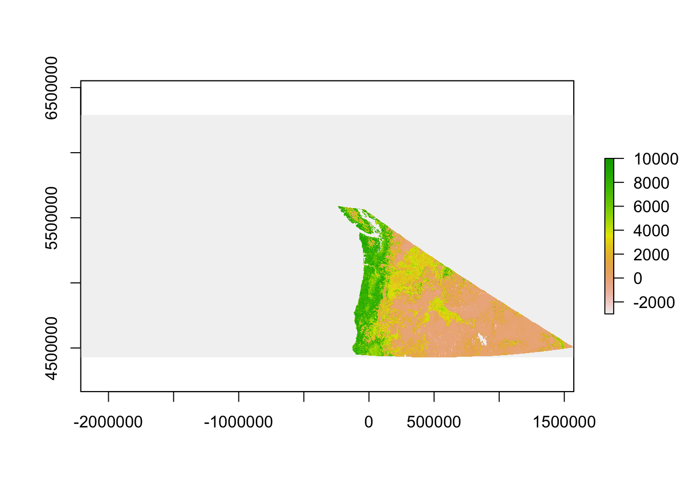
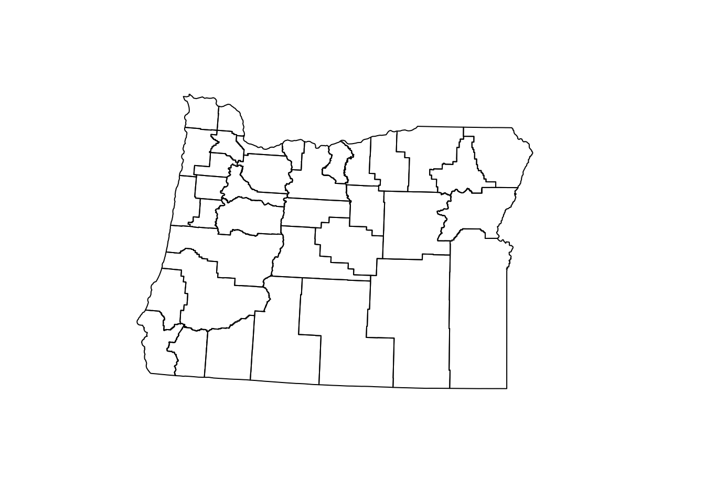
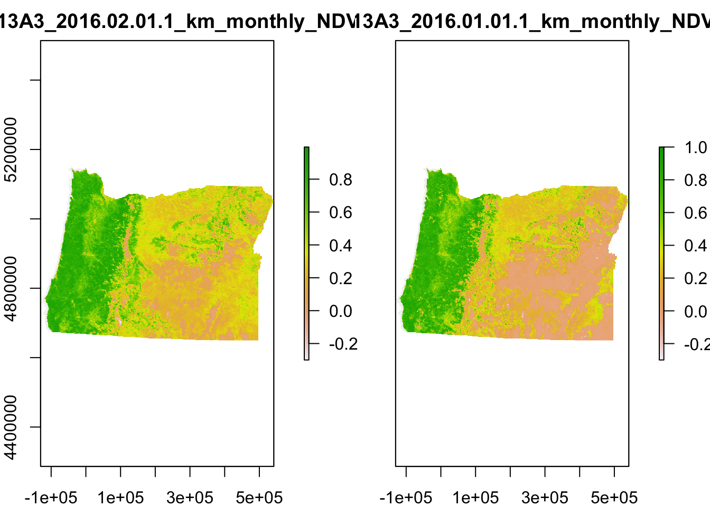

First thing you need to get the appropriate software installed, the modis reprojection tool is used by this package to process your data. It can be used outside of R too, but this automates the process.
Then load packages, and set up your login and file path, followed by checking out what modis products are avaialble, and their appropriate codes.
library(raster)## Loading required package: splibrary(rgeos)## rgeos version: 0.3-26, (SVN revision 560)
## GEOS runtime version: 3.4.2-CAPI-1.8.2 r3921
## Linking to sp version: 1.2-5
## Polygon checking: TRUElibrary(rgdal)## rgdal: version: 1.2-16, (SVN revision 701)
## Geospatial Data Abstraction Library extensions to R successfully loaded
## Loaded GDAL runtime: GDAL 2.1.2, released 2016/10/24
## Path to GDAL shared files: /Users/Maxwell/Library/R/3.3/library/rgdal/gdal
## GDAL binary built with GEOS: FALSE
## Loaded PROJ.4 runtime: Rel. 4.9.1, 04 March 2015, [PJ_VERSION: 491]
## Path to PROJ.4 shared files: /Users/Maxwell/Library/R/3.3/library/rgdal/proj
## Linking to sp version: 1.2-5library(rts) #install and load the rts package for modistools specifically## Loading required package: xts## Loading required package: zoo##
## Attaching package: 'zoo'## The following objects are masked from 'package:base':
##
## as.Date, as.Date.numeric## Loading required package: RCurl## Loading required package: bitops## rts 1.0-45 (2018-03-17)#need to set nasa authorization (username and password that are separately acquired online, see link above), but only need to do once with the function below: setNASAauth()
#setNASAauth()
#setMRTpath("/Users/Maxwell/MRT/bin/", update=T) #function to set the path of the modis reprojection tool for the functions to find
#modisProducts() #function to check out possible products (Beware, the version of Modis matters for extracting with ModisDownload later)#make a date sequence to extract
start<-NULL
end<-NULL
start<-paste0(rep(2016:2018,1) , rep(".01.01",2))
end<-paste0(rep(2016:2018,1),rep(".05.31",2))
start## [1] "2016.01.01" "2017.01.01" "2018.01.01"end## [1] "2016.05.31" "2017.05.31" "2018.05.31"#combine into one statement for each desired date so it is easy to loop
dateseq<-NULL
dateseq<-paste((start), noquote("\",\""), paste(end), sep = "")
dateseq## [1] "2016.01.01\",\"2016.05.31" "2017.01.01\",\"2017.05.31"
## [3] "2018.01.01\",\"2018.05.31"Now to extract dates we have set up from a particular modis product
#extract dateseq for all of oregon, mosaic, and reproject all in one step using ModisDownload
##note the "MOD13A3" is the modis product
###h and v are the modis tiles (can look up online which oncs youll need)
####bands - each modis product has a bunch of bands, so here can specify which ones you want, need to put 0 or 1 for all or else it may do somethin weird
#####proj_params Something weird, look up in the package to get a better idea of what to do here.
######utm_zone only needed if using UTM
######Datum: projection, pixel size: set what you what, mosaic: default is FALSE, need to set to true to mosaic. If you want there is a separate funciton to do it manually. Same with proj, which reprojects the mosaicked file to a tif. Versopm: important, seems like 006 has everything I wanted, 005 didnt have much.
#download all modis files in the date range to your working directory (set above)
ModisDownload("MOD13A3",h=c(8, 9),v=c(4,4),dates=c("2016.01.01", "2016.05.31"),bands_subset="1 0 0 0 0 0 0", proj_type="UTM",proj_params="0 0 0 0 0 0 0 0 0 0 0 0 0 0 0",utm_zone=c(10,11),datum="WGS84",pixel_size=250, mosaic = T, proj=T, version='006')## Warning in strptime(x, format, tz = "GMT"): unknown timezone 'default/
## America/Los_Angeles'#Show files of some pattern in WD
listfiles <- list.files(pattern='MOD13') # in wd
listfiles<-listfiles[1:5] #or whatever ones are .tif
plot(raster(listfiles[1])) # take a look at what they look like!
#Download, or get shape files separately if you want to crop, my interest here is Oregon.
oregon<-readOGR(dsn="/Users/Maxwell/Documents/geospatial/orcnty2015/", layer = "orcntypoly")
orutm<-spTransform(oregon, crs(raster(listfiles[1]))) #make sure coordinate systems of shapes and MODIS files match
plot(orutm)
#make a loop to read in all the tif files and crop them to oregon size, then put them all into a rasterstack
r<-NULL
NDVI<-NULL
for(i in listfiles[1:2]) #just doing two of them for demonstration
{
r<-raster(i)/10000 #divide by 10000 to get into correct units.
#extent(r)<-extent(orutm) #match extents
r<-crop(r, orutm) #crop to size
r<-mask(r, orutm) #hide outside pixels
NDVI<-stack(r, NDVI) #put all modified into a single raster stack
}plot(NDVI)